1. Accueil & Lancement C4 C5
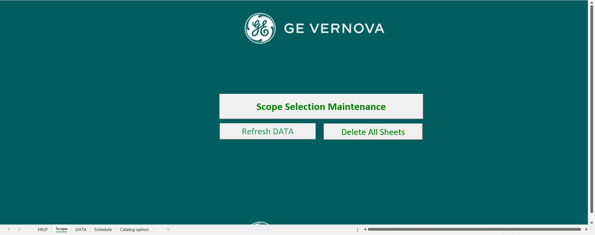
Fonctionnalités : Lancement du Scope, accès rapide aux principales actions.
- Bouton Scope de maintenance pour démarrer le process
- Bouton Refresh Data pour actualiser les données
- Bouton Delete All Sheet pour nettoyer le classeur
Détail technique :
Chaque bouton lance une macro dédiée. Exemple pour le nettoyage : Sub DeleteAllSheetsExceptInitial()
For Each ws In ThisWorkbook.Worksheets
If ws.Name <> "DATA" And ... Then ws.Delete
Next ws
End Sub
Chaque bouton lance une macro dédiée. Exemple pour le nettoyage : Sub DeleteAllSheetsExceptInitial()
For Each ws In ThisWorkbook.Worksheets
If ws.Name <> "DATA" And ... Then ws.Delete
Next ws
End Sub
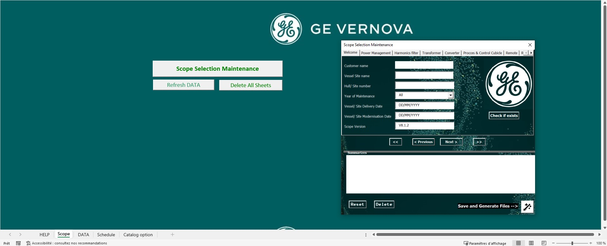
Fonctionnalités : Interface UserForm ergonomique, navigation MultiPage.
- Navigation entre les étapes via boutons Suivant/Précédent
- Affichage dynamique des choix utilisateur
Détail technique :
Utilisation de MultiPage et gestion des événements pour guider l'utilisateur. Private Sub NextButton_Click()
MultiPage1.Value = MultiPage1.Value + 1
End Sub
Utilisation de MultiPage et gestion des événements pour guider l'utilisateur. Private Sub NextButton_Click()
MultiPage1.Value = MultiPage1.Value + 1
End Sub
2. Sécurité & Préparation des données C4 C5
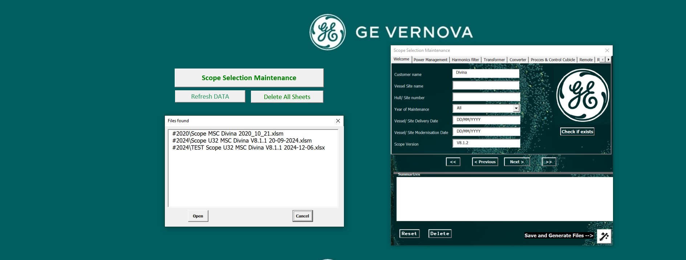
Fonctionnalités : Recherche automatique d’un fichier existant selon les critères.
- Vérification sur le réseau pour éviter les doublons
- Recherche par client, navire, numéro de coque
Détail technique :
Utilisation de FileSystemObject pour parcourir les dossiers et comparer les noms de fichiers. Set fso = CreateObject("Scripting.FileSystemObject")
For Each sousDossier In fso.GetFolder(dossier).SubFolders
For Each fichier In sousDossier.Files
If InStr(1, fichier.Name, boatName, vbTextCompare) > 0 Then ...
Next fichier
Next sousDossier
Utilisation de FileSystemObject pour parcourir les dossiers et comparer les noms de fichiers. Set fso = CreateObject("Scripting.FileSystemObject")
For Each sousDossier In fso.GetFolder(dossier).SubFolders
For Each fichier In sousDossier.Files
If InStr(1, fichier.Name, boatName, vbTextCompare) > 0 Then ...
Next fichier
Next sousDossier

Fonctionnalités : Sélection des équipements via onglets, ajout dynamique à la ListBox.
- Visualisation en temps réel de la sélection
- Ajout/suppression dynamique
Détail technique :
La ListBox est alimentée à chaque changement de sélection. For rowIndex = 0 To ListBoxResume.ListCount - 1
equipmentType = ExtractEquipmentType(ListBoxResume.List(rowIndex))
Next rowIndex
La ListBox est alimentée à chaque changement de sélection. For rowIndex = 0 To ListBoxResume.ListCount - 1
equipmentType = ExtractEquipmentType(ListBoxResume.List(rowIndex))
Next rowIndex
3. Génération & Gestion des feuilles C4
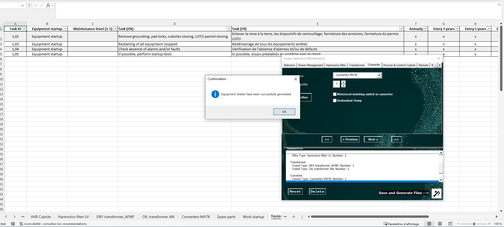
Fonctionnalités : Génération automatique d’une feuille par équipement.
- Structuration des tâches, outils, pièces, instructions
- Formatage dynamique et extraction DATA
Détail technique :
Création de feuilles et remplissage dynamique depuis la base DATA. For Each equipmentType In selectedEquipments
Set ws = EnsureWorksheetExists(wb, equipmentType)
ws.Cells(1, 1).Value = "Task ID"
' Remplissage dynamique des tâches
Next equipmentType
Création de feuilles et remplissage dynamique depuis la base DATA. For Each equipmentType In selectedEquipments
Set ws = EnsureWorksheetExists(wb, equipmentType)
ws.Cells(1, 1).Value = "Task ID"
' Remplissage dynamique des tâches
Next equipmentType
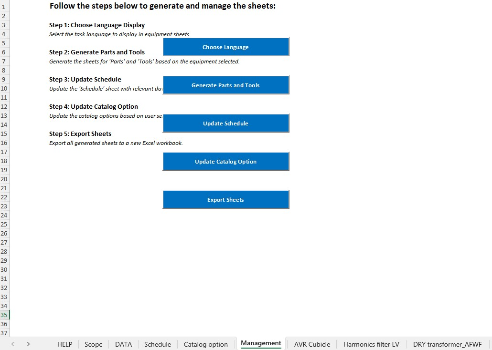
Fonctionnalités : Feuille Management : choix langue, update, export, parts/tools.
- Boutons pour chaque action clé
- Centralisation de la gestion du scope
Détail technique :
Génération dynamique des boutons et automatisation des actions de gestion. .Cells(3, 2).Value = "Step 1: Choose Language Display"
.Object.Caption = "Generate Parts and Tools"
Génération dynamique des boutons et automatisation des actions de gestion. .Cells(3, 2).Value = "Step 1: Choose Language Display"
.Object.Caption = "Generate Parts and Tools"
4. Multilingue & Consolidation C6 C4
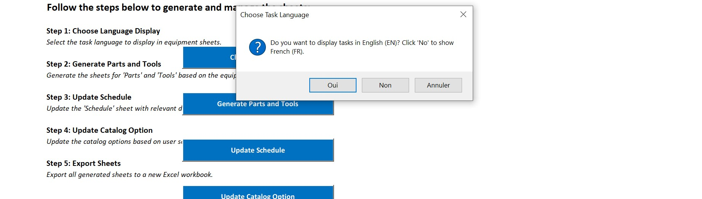
Fonctionnalités : Sélection de la langue d’affichage (FR/EN).
- Affichage dynamique des colonnes selon la langue
Détail technique :
Masquage/affichage des colonnes selon le choix utilisateur. If choice = vbYes Then
ws.Columns("D").EntireColumn.Hidden = False ' Show EN
ws.Columns("E").EntireColumn.Hidden = True ' Hide FR
ElseIf choice = vbNo Then
ws.Columns("D").EntireColumn.Hidden = True ' Hide EN
ws.Columns("E").EntireColumn.Hidden = False ' Show FR
End If
Masquage/affichage des colonnes selon le choix utilisateur. If choice = vbYes Then
ws.Columns("D").EntireColumn.Hidden = False ' Show EN
ws.Columns("E").EntireColumn.Hidden = True ' Hide FR
ElseIf choice = vbNo Then
ws.Columns("D").EntireColumn.Hidden = True ' Hide EN
ws.Columns("E").EntireColumn.Hidden = False ' Show FR
End If
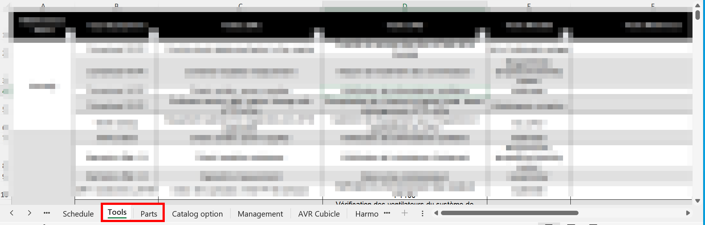
Fonctionnalités : Consolidation automatique des pièces et outils nécessaires.
- Génération d'une feuille synthèse Parts & Tools
Détail technique :
Appel d'une fonction pour générer la feuille synthèse. Call GeneratePartsAndTools(selectedEquipments, selectedLanguage)
Appel d'une fonction pour générer la feuille synthèse. Call GeneratePartsAndTools(selectedEquipments, selectedLanguage)
5. Synchronisation, Actualisation & Export C4 C5
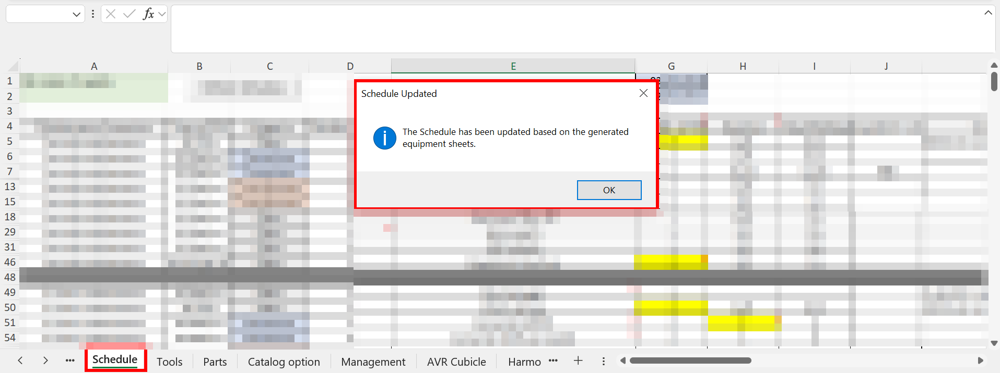
Fonctionnalités : Synchronisation et actualisation des données du scope.
- Mise à jour automatique de la feuille Schedule à partir d’un fichier externe
- Actualisation des feuilles DATA et Catalog Option via Power Query
- Export intelligent des feuilles équipements dans un nouveau classeur
Détail technique :
1. Mise à jour du planning (Schedule) : Sub ActualiserDepuisClasseurExterne()
Set feuilleDestination = ThisWorkbook.Sheets("Schedule")
Set classeurSource = Workbooks.Open(cheminClasseur, ReadOnly:=True)
Set feuilleSource = classeurSource.Sheets("Schedule")
feuilleDestination.Cells.Clear
feuilleSource.UsedRange.Copy Destination:=feuilleDestination.Range("A1")
classeurSource.Close SaveChanges:=False
End Sub Cette macro permet de synchroniser le planning du projet avec la dernière version disponible, en toute sécurité. 2. Actualisation des données via Power Query : Sub RefreshAllData()
ThisWorkbook.RefreshAll
End Sub Cette macro déclenche l’actualisation de toutes les requêtes Power Query du classeur, rechargeant automatiquement les données externes dans les feuilles DATA et Catalog Option. 3. Export des feuilles équipements : For Each ws In wbSource.Sheets
If Trim(UCase(ws.Name)) <> "DATA" And ... Then
ws.Copy After:=wbNew.Sheets(wbNew.Sheets.Count)
' Suppression des colonnes/lignes masquées
End If
Next ws
wbNew.SaveAs fileName:=savePath
1. Mise à jour du planning (Schedule) : Sub ActualiserDepuisClasseurExterne()
Set feuilleDestination = ThisWorkbook.Sheets("Schedule")
Set classeurSource = Workbooks.Open(cheminClasseur, ReadOnly:=True)
Set feuilleSource = classeurSource.Sheets("Schedule")
feuilleDestination.Cells.Clear
feuilleSource.UsedRange.Copy Destination:=feuilleDestination.Range("A1")
classeurSource.Close SaveChanges:=False
End Sub Cette macro permet de synchroniser le planning du projet avec la dernière version disponible, en toute sécurité. 2. Actualisation des données via Power Query : Sub RefreshAllData()
ThisWorkbook.RefreshAll
End Sub Cette macro déclenche l’actualisation de toutes les requêtes Power Query du classeur, rechargeant automatiquement les données externes dans les feuilles DATA et Catalog Option. 3. Export des feuilles équipements : For Each ws In wbSource.Sheets
If Trim(UCase(ws.Name)) <> "DATA" And ... Then
ws.Copy After:=wbNew.Sheets(wbNew.Sheets.Count)
' Suppression des colonnes/lignes masquées
End If
Next ws
wbNew.SaveAs fileName:=savePath
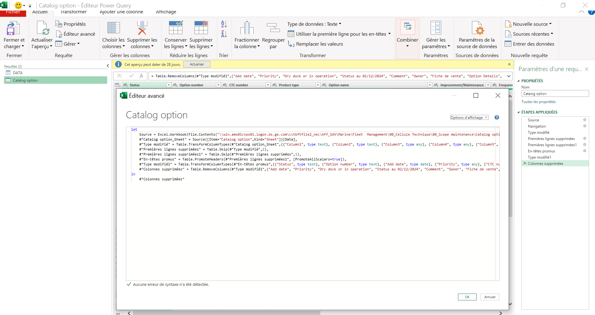
Actualisation des données via Power Query :
Cette capture montre l’interface d’actualisation des requêtes Power Query dans Excel. Lorsqu’on clique sur le bouton Refresh Data, toutes les requêtes connectées (DATA, Catalog Option, etc.) sont rafraîchies automatiquement.
Cette capture montre l’interface d’actualisation des requêtes Power Query dans Excel. Lorsqu’on clique sur le bouton Refresh Data, toutes les requêtes connectées (DATA, Catalog Option, etc.) sont rafraîchies automatiquement.
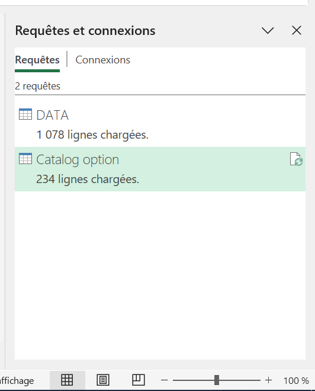
Connexion des requêtes Power Query :
Cette capture présente la liste des requêtes connectées dans le classeur Excel. On visualise ici toutes les sources de données qui alimentent automatiquement les feuilles DATA et Catalog Option lors de l’actualisation.
Cette capture présente la liste des requêtes connectées dans le classeur Excel. On visualise ici toutes les sources de données qui alimentent automatiquement les feuilles DATA et Catalog Option lors de l’actualisation.
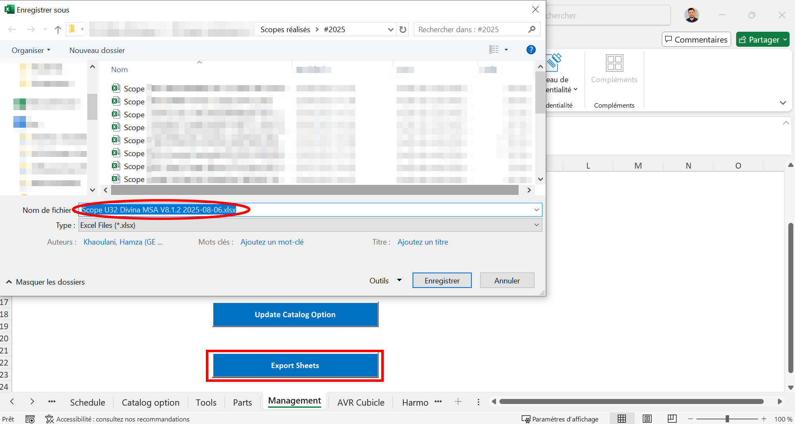
Export des feuilles équipements :
Export intelligent de toutes les feuilles équipements (hors DATA, Scope, etc.) dans un nouveau classeur, avec nommage automatique et suppression des lignes/colonnes masquées.
Export intelligent de toutes les feuilles équipements (hors DATA, Scope, etc.) dans un nouveau classeur, avec nommage automatique et suppression des lignes/colonnes masquées.